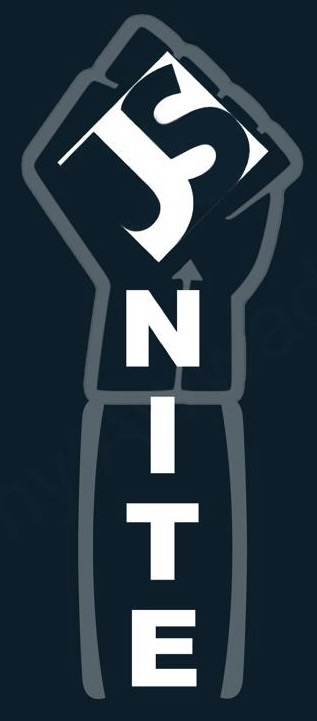

Previous Features:
Richard Allen
Preacher, Abolitionist, Former Slave, Educator
b. 1760 - 1831

Richard Allen was born into servitude in 1760 in Philadelphia. He earned $2,000 to buy his and his brother’s freedoms, just as the antislavery movement and denominational Christianity were gaining prominence. He is considered the founder of America’s first independent black denomination, the African Methodist Episcopal (AME) Church, which has a membership of more than 2.5 million people and 6,000 churches today. In his biography, he wrote, “I was awakened and brought to see myself, poor, wretched and undone, and without the mercy of God must be lost.” He was ordained the church’s pastor and later elected bishop, to which he served until his death.
Allen dedicated his life to the abolitionist movement and to justice: he focused his sermons on the freedoms of slaves, cessation of colonization, education for youths, and temperance; he opened a day school for black children and a night school for adults; his home and Bethel AME were stops on the Underground Railroad; he published articles in Freedom’s Journal; he authored three pamphlets about escaping the bonds of slavery. His fearless and inspiring legacy lives on today in the AME church’s work, exemplified through its motto: “God Our Father, Christ Our Redeemer, the Holy Spirit Our Comforter, Humankind Our Family.”
References:
PBS Richard Allen Biography
The Undefeated
African Methodist Episcopal Church Website
Dr. Charles Drew
Physician
b. 1904 - 1950
Dr. Charles Drew has saved, and is continuing to save, millions of lives. Today, there are 15.7 million blood donations a year in the U.S. from 9.2 million donors. As a researcher and surgeon, he revolutionized the understanding of plasma and created the blood bank as we know it today. When he was young, Drew was an exceptional athlete in football, baseball, basketball, and track and field at Washington, D.C.’s Dunbar High School. Unable to afford medical school in the U.S., he attended McGill University in Montreal and became the first African-American to get his doctorate from Columbia University in 1940. Just as the U.S. and Great Britain were becoming involved in World War II, he became the world’s leading authority on blood transfusions and storage—his research established the basis of blood collection, donor requirements, and training protocols that still save countless lives today.
Drew became the medical director of the American Red Cross National Blood Donor Service, leading the collection of tens of thousands of pints of blood for U.S. troops and managing two of the largest blood banks in the war. Some historians say his work might have saved the world from Nazism, since battlefield blood storage and transfusions didn’t exist. Even with his tremendous work and courage, the U.S. military ruled that the blood of African-Americans would be segregated and not used on white troops. Drew resigned from the Red Cross out of outrage, and returned to Howard as a professor and head of surgery at Freedman’s Hospital in Washington, D.C., where he trained a generation of black physicians. His premature death by car accident left behind a legacy of inspirational, unstinting dedication to science, justice, and service for all people.”
References:
Dr. Drew Biography
The Undefeated